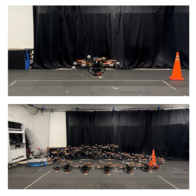
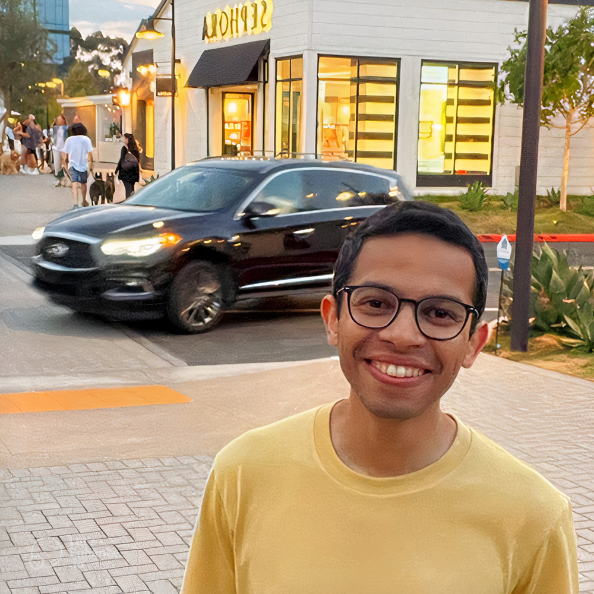

Abdullah Altawaitan
Ph.D. Candidate at UC San Diego
Robotics | Machine Learning | Control
About
I'm currently a Ph.D. candidate in the Department of Electrical and Computer Engineering at University of California San Diego. I'm working under the guidance of Prof. Nikolay Atanasov at the Existential Robotics Laboratory. Before embarking on my Ph.D. journey, I worked at Honeywell as a project engineer. I received my B.S. and M.S. degrees in Electrical Engineering from Arizona State University, Tempe, Arizona, in 2017 and 2019, respectively.
News
Apr'26
Checkout our latest paper on Adapting Neural Robot Dynamics on the Fly for Predictive Control.
Oct'25
Our paper on Port-Hamiltonian Dynamics Learning and Control on Lie Groups received the Best 2024 Paper Award from the IEEE RAS Technical Committee on Robot Control!
Sep'25
Our paper on Learned IMU Bias for Invariant Visual Inertial Odometry has been accepted to RA-L.
Jun'25
Passed my Qualifying Exam and advanced to candidacy!
May'25
Our paper on Port-Hamiltonian Dynamics Learning and Control on Lie Groups received an honorable mention for the 2024 T-RO King-Sun Fu Memorial Best Paper Award!
Jul'24
Jun'24
Our paper on Port-Hamiltonian Dynamics Learning and Control on Lie Groups has been accepted to T-RO.
May'24
Presented our work on Hamiltonian Dynamics Learning from Observations at ICRA'24 in Yokohama, Japan.
Jun'23
Passed my Preliminary Exam!
Jan'23
Took on the lab manager role at the Aerodrome, part of the Contextual Robotics Institute at UC San Diego.
Publications